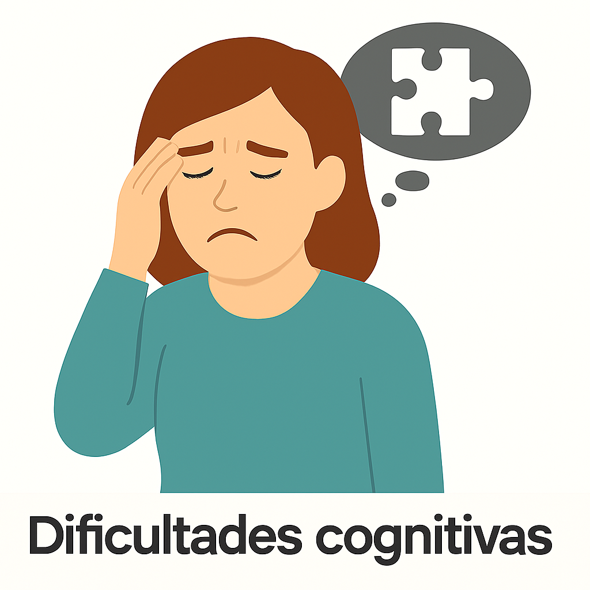
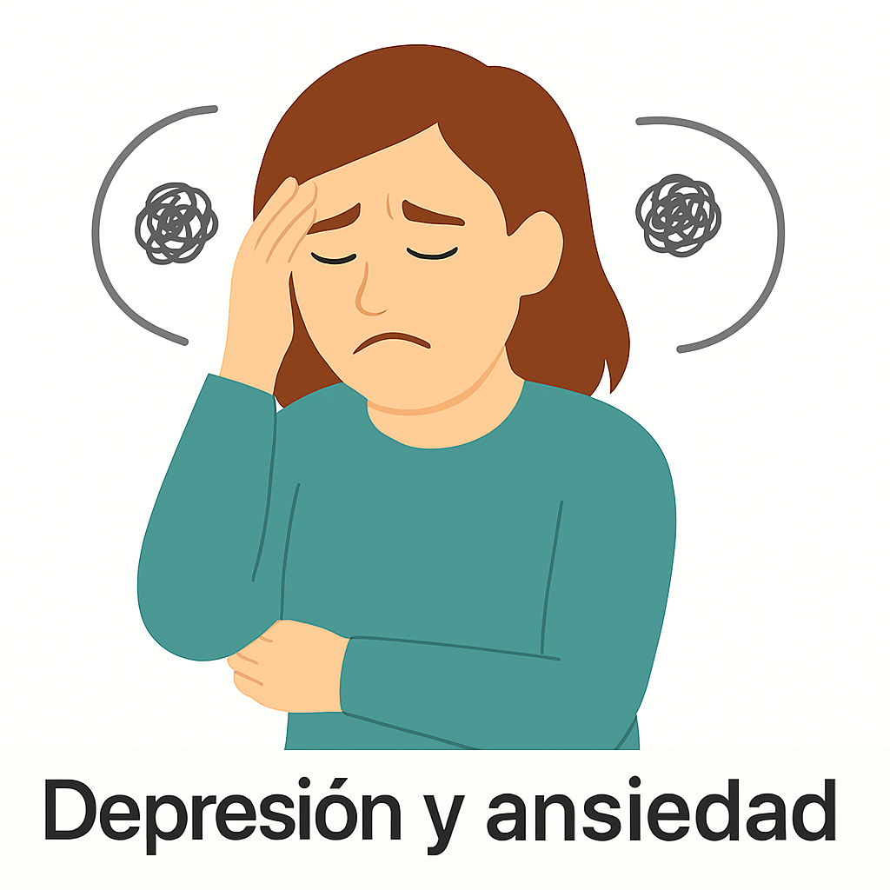

🧠 Cognitivos y Emocionales

Fatiga extrema
Sensación de agotamiento abrumador que no mejora con descanso.

Dificultades cognitivas
Problemas de memoria, concentración, o velocidad de procesamiento mental.

Depresión y ansiedad
Trastornos del estado de ánimo relacionados con la enfermedad y el sistema nervioso.